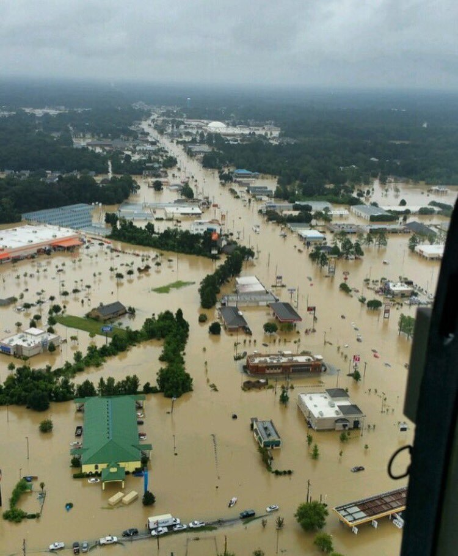
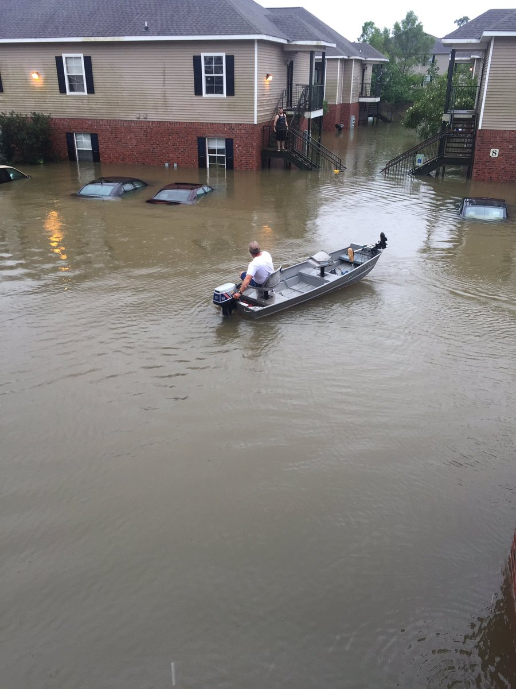
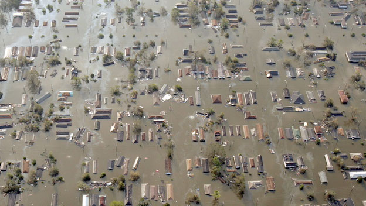
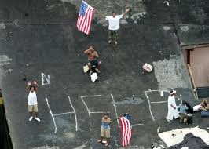

Past vs. Present
Knowing your history isn't always fun or easy but today its unfortunately become a lot easier because it has been repeating itself… a lot. The problem with history is, those who don't learn from it are doomed to repeat it, or more accurately put, those who are systematically oppressed in the past will continue to be systematically oppressed in the future so long as the institutions, laws, and people in power that enforce such oppression continue to be the ones in power to make sure nothing changes. Today the past mirrors the present and gives a frightening indication of what the future can and might be.
There is a problem when the same crisis hits the same place and there is still no solution. "Fool me once, shame on you. Fool me twice, shame on me." Except the shame is still on the American people that watched Louisiana suffer over a decade ago and are watching them suffer again.
 

All of these photos are of Louisiana. These images are all from the very current, very on going, flood happening in Baton Rogue and other areas of the state where they are recieving the same delayed treatment that many minorities faced during Hurricane Katrina in '05. Check out the story behind the pictures.
The flood in Louisiana is not the only historic parallel that is going on in America today. It seems as though historically black pride has always been deemed unpatriotic, especially by America's athletes. To quote the late,
great, Malcolm X (or at least the movie) " bla bla bla."
Now, almost 50 years later after the 1968 Olympics a similar act has taken place. Gabby Douglas, an olympic gymnast recieved harsh comments due to her failure to place her hand over her heart during the pledge of allegiance. Douglas' sparked outrage, however noteworthy, was minor compared to that of Colin Kaepernick's. Kaepernick is an American football quartback who refused to stand for the national anthem due to its lyrics involving slaves, being written by a man who proudly owned slaves, and for the general yet constant oppression black people currently face in America despite its claims of being the "land of the free." In both cases, white people were not attacked, and black pride was celebrated or acknowledged, yet the scrutiny these celebrities faced match that of the 1968 Olympics showing just how little has changed in 50 years.
Years ago Katrina hit, not completely unexpectedly. It was stronger than many predicted and it led to years of devastation
 
The "unamerican" behavior is shown several times throughout history most notably at the 1968 Olympics. For those who do not know what this event refers to here is the gist of it, two African American male sprinters who had just won medals for their events, bowed their heads and raised their fists in the Black Power salute position. They were later stripped of their medals and suspended from the team, even recieving death threats. The actions of these two sprinters, Tommie Smith and John Carlos, caused public outrage back home.
Today thug is the new n*gger (and I'm black so I can say that word although I won't right now but that's a different story for a different time).There is an over use of “thug” to represent any black person. While many of the people being called a “thug” were no saint, they also are not deserving of the label as a thug. Thug is defined as a brutal ruffian or assassin, with its origins coming from India as “a member of a religious organization of robbers and assassins in India. Devotees of the goddess Kali, the Thugs waylaid and strangled their victims, usually travelers, in a ritually prescribed manner.” The people being described and seen as thugs, are usually frustrated children and youth without a positive outlet for their anger and mistreatment or average black men minding their own business.
The word thug, which has mainly only been used as a label for blacks and Latinos nowadays, is being compared to the 21st century version of the word n*gger. President Barack Obama and Baltimore mayor, both black, have used the word thug to describe some of the individuals that took place in the Baltimore protests and this creates a somewhat double standard for acceptable uses. Because thug is the new n*gger and blacks have had their own variation of this word (n*gga), it is not the same for a black person to call these people thugs. They are not using this word with a negative connotation, or to keep down an entire race of people. The word thug, as they used it, has a much lighter meaning behind it and but does parallel almost exactly with what was an acceptable way of describing blacks then and now. If all that people hear is that black people are thugs (n*ggers), then that is the stigma that will continuously be believed. With all the people speaking out about the word thug, and recognizing what people TRULY want to say that word, it is only a matter of time before “thug” is reclaimed by the black community and some other harsh word becomes the new n*gger.